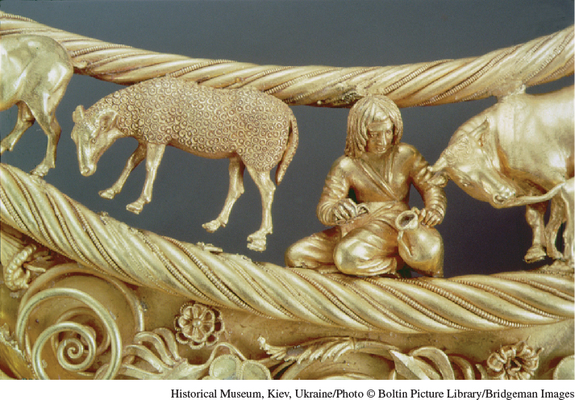

The ScythiansAn ancient horse-riding pastoral people during the second-wave era, the Scythians occupied a region in present-day Kazakhstan and southern Russia. Their pastoral way of life is apparent in this detail from an exquisite gold necklace from the fourth century B.C.E.(Historical Museum, Kiev, Ukraine/Photo © Boltin Picture Library/Bridgeman Images)